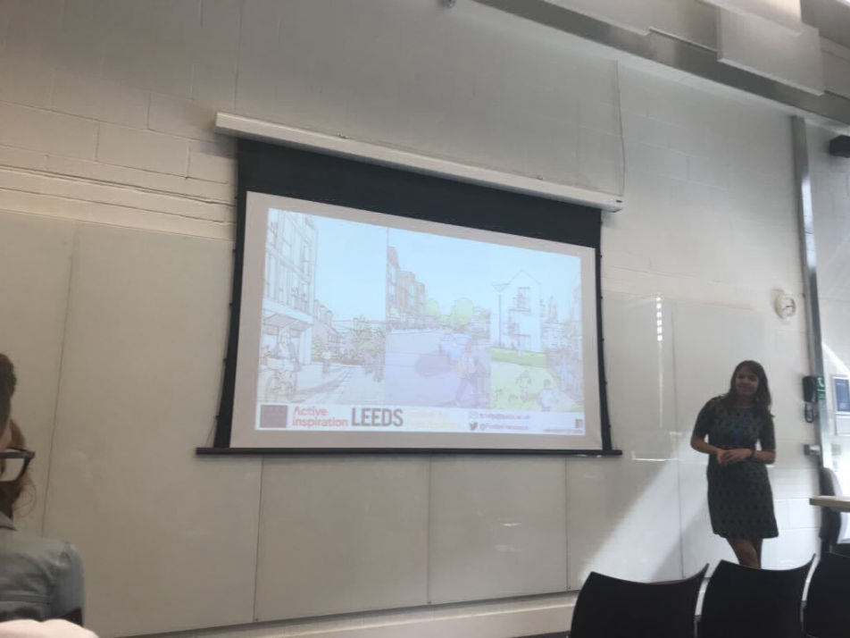

Address
Leeds Institute for Data Analytics
Level 11
Worsley Building
Clarendon Way
Leeds
Contacts
Email: fs14fp@leeds.ac.uk

"Demographic and geographic determinants of physical activity: findings from a novel dataset"
September 2018
On the 10th September I gave a 15-minute oral presentation at the Annual British Society for Population Studies (BSPS) conference in Winchester. The presentation sat in the health and mortality strand and contained insights into demographic and geographic determinants of physical activity from analysis of smartphone app data.
Data from 340,000 individuals, detailing their gender, year of birth and postcode area were analysed. This data consists of 9.6 million recorded activities including activity type, duration of activity, distance covered and if applicable number of steps taken during the activity.
There was found to be a gender disparity in the amount of activity taken with men taking more steps and moving greater distances on average than women. Despite more users being female. A potentially unexpected pattern was also observed for age with the highest number of users sitting in the mid-20s to 30s age bracket whilst the highest number of activities were recorded by the mid-30s to 40s age bracket. Similarly, the mean number of steps taken increased with age, i.e. the average number of steps taken by those aged 70 is higher than the average number of steps taken by those aged 40.
Seasonality was also observed to play a role in physical activity level, with a noticeable difference in number of recorded activities and average steps when daylight saving begins and ends.
The dataset covers the entirety of the UK with the users consisting of between 0.17% to 2.82% of the population of each postcode area. Further work is ongoing investing any spatial disparities in activity levels as well as further exploring the seasonality and demographic differences in physical activity observed in this dataset.
Full Abstract
Presentation Slides
Leeds Institute for Data Analytics
Level 11
Worsley Building
Clarendon Way
Leeds
Email: fs14fp@leeds.ac.uk